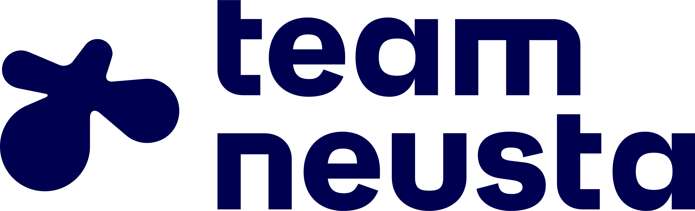
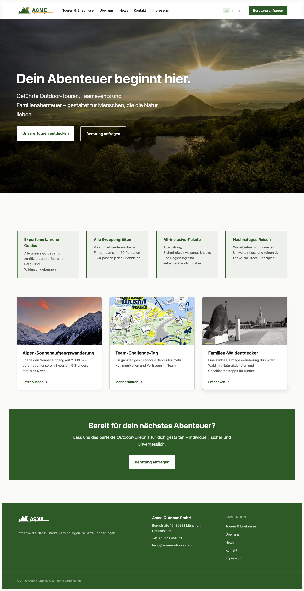

TYPO3 Developer Days 2026
CMS? That’s a trivial problem.
Even Hybris has one built in.
— A colleague, Hybris (now SAP Commerce), ~2015
content management systems

Let’s
find out.
Not a ranking. A map.
Live demo
Payload
Code-first CMS
shown live at the talk
Live demo
Strapi
Headless CMS
shown live at the talk
Live demo
Pimcore
DXP
shown live at the talk
Live demo
Storyblok
Headless + Visual Editor
shown live at the talk
Live demo
TYPO3
Enterprise CMS
shown live at the talk
You’re going to keep
using TYPO3.
And that’s exactly the point. You just saw what’s possible elsewhere — now bring it back.
Every CMS solved at least one
problem brilliantly.
The question is whether you’re
learning from it — or ignoring it.
Even a text field per page taught someone something.
Your editor spends hours
every day in the system
you built.
They don’t know what TypoScript is.
They don’t care about the content model.
They just want to publish a page without calling you.